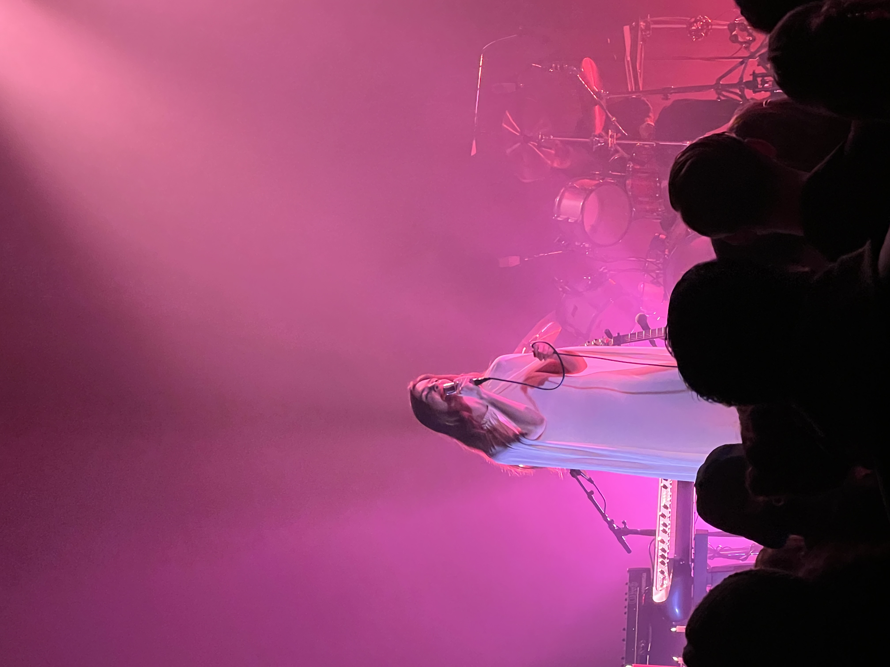
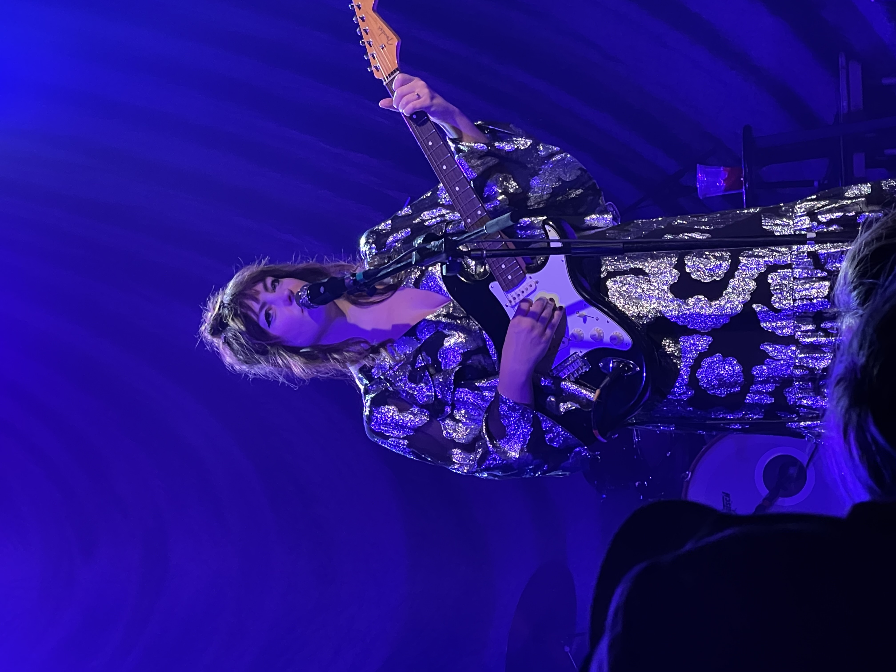

Digital PublishingThe time we live in now is one that we can publish anything online, and it is easier to gain access to digital publishing than ever before. I submitted this photograph for Northern Lights. Northern Lights is so great to get photography, art, and prose out into the world and it’s entirely free. Publishing is significant to me because it allows me to publish my thoughts and art without having any barriers. It has allowed artists to find community through online spaces.

Figure 2: Taking concert pictures and publishing them online is my favorite way to digitally publishPublishing has become a word of many meanings; I publish online my life and mostly my travels and I do consider that digital publishing. I love publishing music reviews online and photographs I’ve taken of shows I’ve been too. The parameters of digital publishing are semi-limitless; I would love to make a website/blog to showcase my photography at shows, my creative writings, and my music reviews I write.
 href="Reflection.html">Reflection
href="Reflection.html">Reflection